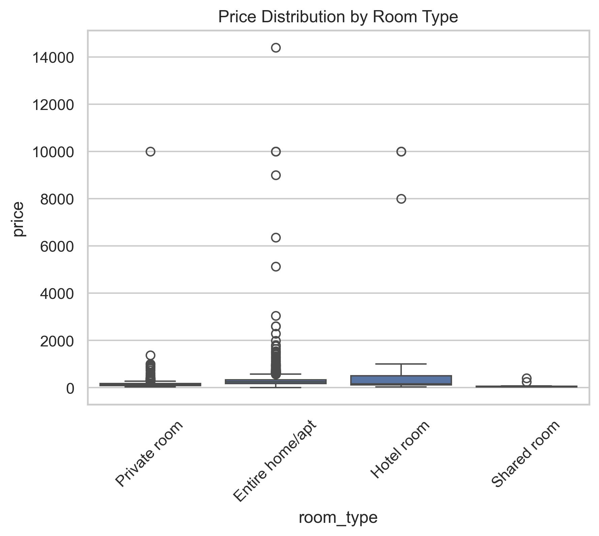
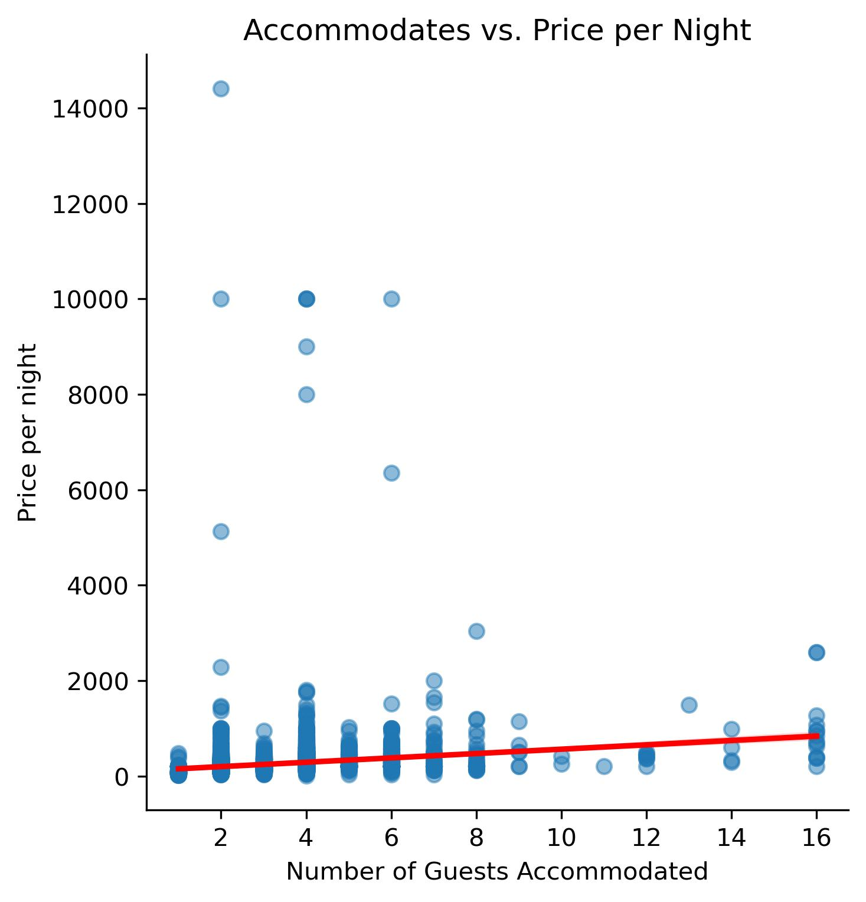
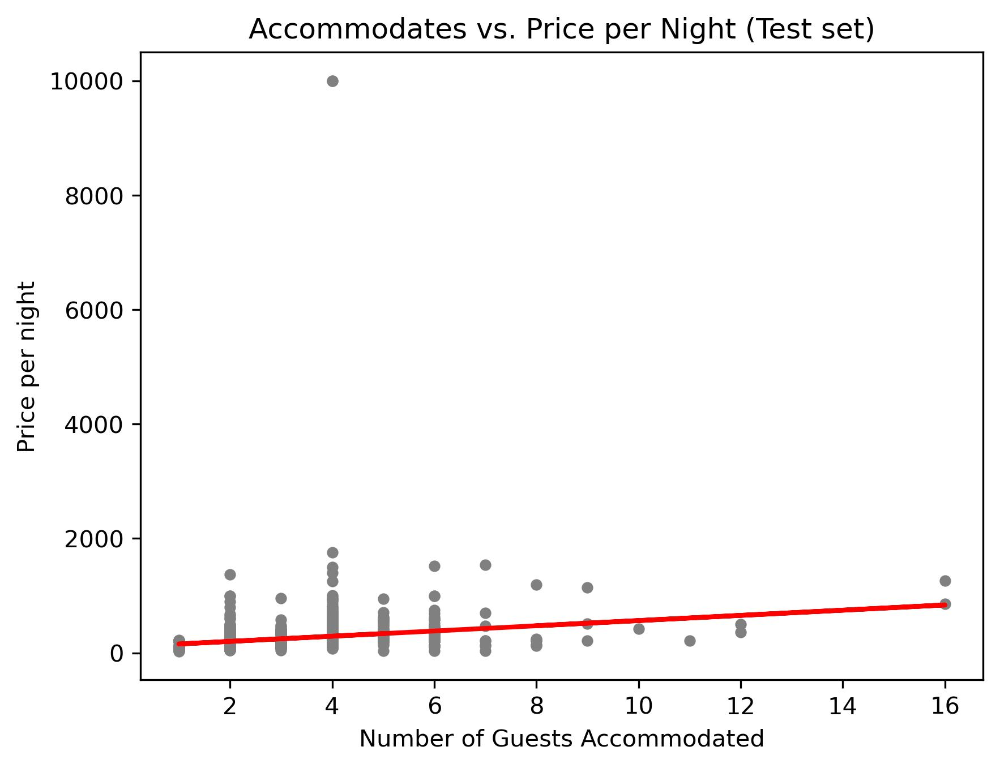
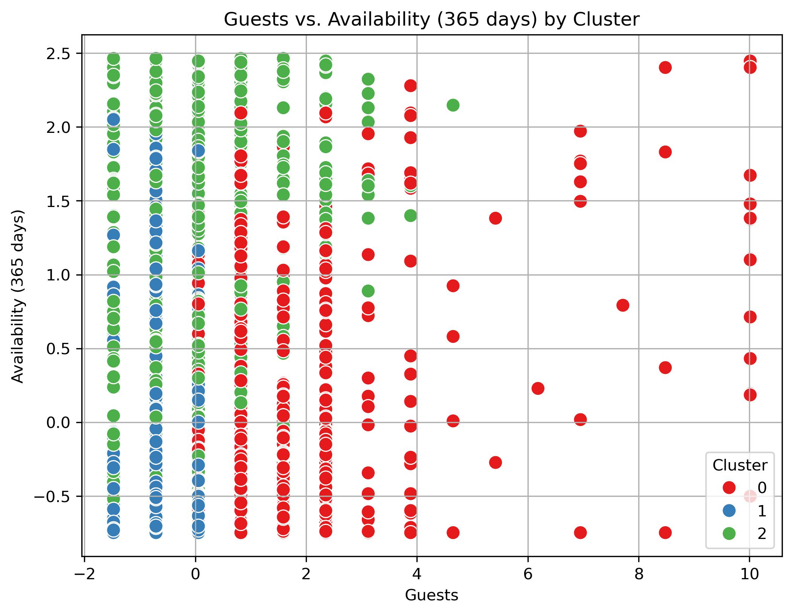

📚 Skills
- Data wrangling & EDA
- Regression & clustering (K-Means)
- Geospatial & correlation analysis
🛠 Tools
- Python (Pandas, GeoPandas, Scikit-learn)
- Jupyter Notebook, Tableau
📊 Procedures
- Cleaning Airbnb open data
- Analyzing pricing by host & room type
- Modeling nightly prices
- Segmenting listings into clusters
- Visualizing insights with Tableau
Project Overview
📌 Context:
- Amsterdam's tourism boom drives demand in the Airbnb market.
- This open data project explores price drivers, host behavior, availability, and segmentation.
❓ Key Questions:
- What drives nightly prices?
- How do host status and room type affect pricing?
- Can we identify meaningful customer segments?
- How does availability vary across neighborhoods?

🗺️ Neighborhood Pricing
Insight: Central areas like Jordaan and De Pijp are significantly more expensive.
📈 Price Drivers
Does guest capacity influence price? A moderate upward trend exists, but other factors play stronger roles.

🧠 Modeling & Clustering
Linear Regression: Shows weak explanatory power – not sufficient alone.

K-Means Clustering: Identified 3 key segments:
- Premium stays: high availability & guest capacity
- Compact urban: low capacity, high turnover
- Peripheral budget: low price, high availability

Final Takeaways
- Room type is the most influential price driver.
- Location matters – central areas are pricier.
- Superhost status only slightly affects price.
- Guest capacity has moderate impact.
- Regression is limited, clustering is more insightful.